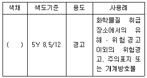
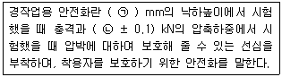
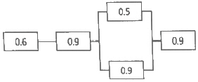
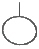
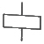
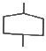
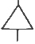
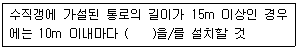
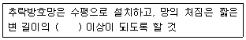

건설안전산업기사 (2018-04-28 기출문제)
1과목: 산업안전관리론
1. 안전모의 시험성능기준 항목이 아닌 것은?
- 내관통성
- 충격흡수성
- 내구성
- 난연성
(정답률: 64%)

2. 안전교육 방법 중 TWI의 교육과정이 아닌 것은?
- 작업지도 훈련
- 인간관계 훈련
- 정책수립 훈련
- 작업방법 훈련
(정답률: 75%)
3. 재해율 중 재직 근로자 1000명당 1년간 발생하는 재해자 수를 나타내는 것은?
- 연천인율
- 도수율
- 강도율
- 종합재해지수
(정답률: 76%)
4. 모랄 서베이(Morale Survey)의 효용이 아닌 것은?
- 조직 또는 구성원의 성과를 비교ㆍ분석한다.
- 종업원의 정화(Catharsis)작용을 촉진시킨다.
- 경영관리를 개선하는 자료를 얻는다.
- 근로자의 심리 또는 욕구를 파악하여 불만을 해소하고, 노동의욕을 높인다.
(정답률: 73%)
5. 내전압용절연장갑의 성능기준상 최대사용전압에 따른 절연장갑의 구분 중 ○○등급의 색상으로 옳은 것은?
- 노란색
- 흰색
- 녹색
- 갈색
(정답률: 73%)
6. 착오의 요인 중 인지과정의 착오에 해당하지 않는 것은?
- 정서불안정
- 감각차단현상
- 정보부족
- 생리ㆍ심리적 능력의 한계
(정답률: 64%)
7. 산업안전보건법령상 안전ㆍ보건표지의 색채, 색도기준 및 용도 중 다음 ( ) 안에 알맞은 것은?

- 파란색
- 노란색
- 빨간색
- 검은색
(정답률: 75%)
8. 안전교육 훈련의 기법 중 하버드 학파의 5단계 교수법을 순서대로 나열한 것으로 옳은 것은?
- 총괄 → 연합 → 준비 → 교시 → 응용
- 준비 → 교시 → 연합 → 총괄 → 응용
- 교시 → 준비 → 연합 → 응용 → 총괄
- 응용 → 연합 → 교시 → 준비 → 총괄
(정답률: 81%)
9. 보호구 안전인증 고시에 따른 안전화의 정의 중 다음 ( ) 안에 알맞은 것은?

- ㉠ 500, ㉡ 10.0
- ㉠ 250, ㉡ 10.0
- ㉠ 500, ㉡ 4.4
- ㉠ 250, ㉡ 4.4
(정답률: 72%)
10. 산업재해에 있어 인명이나 물적 등 일체의 피해가 없는 사고를 무엇이라고 하는가?
- Near Accident
- Good Accident
- True Accident
- Original Accident
(정답률: 74%)
11. 산업안전보건법령상 안전관리자가 수행하여야 할 업무가 아닌 것은? (단, 그 밖에 안전에 관한 사항으로서 고용노동부장관이 정하는 사항은 제외한다.)
- 위험성평가에 관한 보좌 및 조언ㆍ지도
- 물질안전보건자료의 게시 또는 비치에 관한 보좌 및 조언ㆍ지도
- 사업장 순회점검ㆍ지도 및 조치의 건의
- 산업재해에 관한 통계의 유지ㆍ관리ㆍ분석을 위한 보좌 및 조언ㆍ지도
(정답률: 66%)
12. 근로자가 작업대 위에서 전기공사 작업 중 감전에 의하여 지면으로 떨어져 다리에 골절상해를 입은 경우의 기인물과 가해물로 옳은 것은?
- 기인물 - 작업대, 가해물 - 지면
- 기인물 - 전기, 가해물 - 지면
- 기인물 - 지면, 가해물 - 전기
- 기인물 - 작업대, 가해물 - 전기
(정답률: 74%)
13. 지난 한 해 동안 산업재해로 인하여 직접손실비용이 3조 1600억원이 발생한 경우의 총재해 코스트는? (단, 하인리히의 재해 손실비 평가방식을 적용한다.)
- 6조 3200억원
- 9조 4800억원
- 12조 6400억원
- 15조 8000억원
(정답률: 63%)
14. 산업안전보건법령상 특별안전ㆍ보건교육 대상 작업별 교육내용 중 밀폐공간에서의 작업별 교육내용이 아닌 것은? (단, 그 밖에 안전ㆍ보건관리에 필요한 사항은 제외한다.)
- 산소농도 측정 및 작업환경에 관한 사항
- 유해물질의 인체에 미치는 영향
- 보호구 착용 및 사용방법에 관한 사항
- 사고 시의 응급처치 및 비상 시 구출에 관한 사항
(정답률: 76%)
15. 인간관계의 메커니즘 중 다른 사람으로부터의 판단이나 행동을 무피반적으로 논리적, 사실적 근거 없이 받아들이는 것은?
- 모방(imitation)
- 투사(projection)
- 동일화(identification)
- 암시(suggestion)
(정답률: 51%)
16. 점검시기에 의한 안전점검의 분류에 해당하지 않는 것은?
- 성능점검
- 정기점검
- 임시점검
- 특별점검
(정답률: 69%)
17. 매슬로우(Maslow)의 욕구단계 이론 중 제5단계 욕구로 옳은 것은?
- 안전에 대한 욕구
- 자아실현의 욕구
- 사회적(애정적) 욕구
- 존경과 긍지에 대한 욕구
(정답률: 76%)
18. 부주의 현상 중 의식의 우회에 대한 예방대책으로 옳은 것은?
- 안전교육
- 표준작업제도 도입
- 상담
- 적성배치
(정답률: 73%)
19. 산업안전보건법령상 근로자 안전ㆍ보건교육 중 채용 시의 교육 및 작업내용 변경시의 교육 사항으로 옳은 것은?
- 물질안전보건자료에 관한 사항
- 건강증진 및 질병 예방에 관한 사항
- 유해ㆍ위험 작업환경 관리에 관한 사항
- 표준안전작업방법 및 지도 요령에 관한 사항
(정답률: 51%)
20. 파블로프(Pavlov)의 조건반사설에 의한 학습 이론의 원리에 해당되지 않는 것은?
- 일관성의 원리
- 시간의 원리
- 강도의 원리
- 준비성의 원리
(정답률: 60%)
2과목: 인간공학 및 시스템안전공학
21. 그림과 같은 시스템에서 전체 시스템의 신뢰도는 얼마인가? (단, 네모 안의 숫자는 각 부품의 신뢰도이다.)

- 0.4104
- 0.4617
- 0.6314
- 0.6804
(정답률: 62%)
22. 건습지수로서 습구온도와 건구온도의 가중평균치를 나타내는 Oxford지수의 공식으로 맞는 것은?
- WD = 0.65WB + 0.35DB
- WD = 0.75WB + 0.25DB
- WD = 0.85WB + 0.15DB
- WD = 0.95WB + 0.⑤DB
(정답률: 65%)
23. 시스템의 정의에 포함되는 조건 중 틀린 것은?
- 제약된 조건 없이 수행
- 요소의 집합에 의한 구성
- 시스템 상호간에 관계를 유지
- 어떤 목적을 위하여 작용하는 집합체
(정답률: 70%)
24. 체계분석 및 설계에 있어서 인간공학적 노력의 효능을 산정하는 척도의 기준에 포함되지 않는 것은?
- 성능의 향상
- 훈련비용의 절감
- 인력 이용율의 저하
- 생산 및 보전의 경제성 향상
(정답률: 66%)
25. 인간의 기대하는 바와 자극 또는 반응들이 일치하는 관계를 무엇이라 하는가?
- 관련성
- 반응성
- 양립성
- 자극성
(정답률: 65%)
26. FTA에서 어떤 고장이나 실수를 일으키지 않으면 정상사상(top event)은 일어나지 않는다고 하는 것으로 시스템의 신뢰성을 표시하는 것은?
- cut set
- minimal cut set
- free event
- minimal path set
(정답률: 63%)
27. 반경 10cm의 조종구(ball cotrol)를 30° 움직였을 때, 표시장치가 2cm 이동하였다면 통제표시비(C/R비)는 약 얼마인가?
- 1.3
- 2.6
- 5.2
- 7.8
(정답률: 58%)
28. 결함수분석법에서 일정 조합 안에 포함되어 있는 기본사상들이 모두 발생하지 않으면 틀림없이 정상사상(top event)이 발생되지 않는 조합을 무엇이라고 하는가?
- 컷셋(cut set)
- 패스셋(path set)
- 결함수셋(fault tree set)
- 부울대수(boolean algebra)
(정답률: 61%)
29. 인간의 눈에서 빛이 가장 먼저 접촉하는 부분은?
- 각막
- 망막
- 초자체
- 수정체
(정답률: 70%)
30. FR도에 사용되는 기호 중 “전이기호”를 나타내는 기호는?




(정답률: 66%)
31. 인체에서 뼈의 주요 기능으로 볼 수 없는 것은?
- 대사작용
- 신체의 지지
- 조혈작용
- 장기의 보호
(정답률: 70%)
32. 작업기억(working memory)에서 일어나는 정보코드화에 속하지 않는 것은?
- 의미 코드화
- 음성 코드화
- 시각 코드화
- 다차원 코드화
(정답률: 72%)
33. 휴먼 에러의 배후 요소 중 작업방법, 작업순서, 작업정보, 작업환경과 가장 관련이 깊은 것은?
- man
- machine
- media
- management
(정답률: 58%)
34. 소음성 난청 유소견자로 판정하는 구분을 나타내는 것은?
- A
- C
- D1
- D2
(정답률: 63%)
35. 설비의 위험을 예방하기 위한 안정성 평가 단계 중 가장 마지막에 해당하는 것은?
- 재평가
- 정성적 평가
- 안전대책
- 정량적 평가
(정답률: 70%)
36. Chapanis의 위험수준에 의한 위험발생률 분석에 대한 설명으로 맞는 것은?
- 자주 발생하는 (frequent) ＞ 10-3/day
- 가끔 발생하는 (occasional) ＞ 10-5/day
- 거의 발생하지 않는 (remote) ＞ 10-6/day
- 극히 발생하지 않는 (impossible) ＞ 10-8/day
(정답률: 58%)
37. 윤활관리시스템에서 준수해야 하는 4가지 원칙이 아닌 것은?
- 적정량 준수
- 다양한 윤활제의 혼합
- 올바른 윤활법의 선택
- 윤활기간의 올바른 준수
(정답률: 79%)
38. 인간공학적인 의자설계를 위한 일반적 원칙으로 적절하지 않은 것은?
- 척추의 허리부분은 요부 전만을 유지한다.
- 허리 강화를 위하여 쿠션을 설치하지 않는다.
- 좌판의 앞 모서리 부분은 5cm 정도 낮아야 한다.
- 좌판과 등받이 사이의 각도는 90° ~ 1⑤°를 유지하도록 한다.
(정답률: 75%)
39. 단위 면적 당 표면을 나타내는 빛의 양을 설명한 것으로 맞는 것은?
- 휘도
- 조도
- 광도
- 반사율
(정답률: 45%)
40. 정보를 전송하기 위해 청각적 표시장치를 사용해야 효과적인 경우는?
- 전언이 복잡할 경우
- 전언이 후에 재참조될 경우
- 전언이 공간적인 위치를 다룰 경우
- 전언이 즉각적인 행동을 요구할 경우
(정답률: 78%)
3과목: 건설시공학
41. 다음 중 콘크리트 타설 공사와 관련된 장비가 아닌 것은?
- 피니셔(Finisher)
- 진동기(Vibrator)
- 콘크리트 분배기(concrete distributor)
- 항타기(Air hammer)
(정답률: 75%)
42. 대상지역의 지반특성을 규명하기 위하여 실시하는 사운딩시험에 해당되는 것은?
- 함수비시험
- 액성한계시험
- 표준관입시험
- 1축 압축시험
(정답률: 68%)
43. 흙막이 공사 후 지표면의 재하 하중에 못견디어 흙막이 벽의 바깥에 있는 흙이 안으로 밀려 흙파기 저면이 불룩하게 솟아오르는 현상은?
- 히빙 현상
- 보일링 현상
- 수동토압 파괴 현상
- 진단 파괴 현상
(정답률: 74%)
44. 철골공사에서 쓰이는 내화피복 공법의 종류가 아닌 것은?
- 성형판 붙임공법
- 뿜칠공법
- 미장공법
- 나중매입공법
(정답률: 60%)
45. VE적용 시 일반적으로 원가절감의 가능성이 가장 큰 단계는?
- 기획 설계
- 공사 착수
- 공사 중
- 유지관리
(정답률: 71%)
46. 독립 기초판(3.0m×3.0m) 하부에 말뚝머리지름이 40cm인 기성콘크리트 말뚝을 9개 시공하려고 할 때 말뚝의 중심간격으로 가장 적당한 것은?
- 110cm
- 100cm
- 90cm
- 80cm
(정답률: 51%)
47. 건설공사 입찰방식 중 공개경쟁입찰의 장점에 속하지 않는 것은?
- 유자격자는 모두 참가할 수 있는 기회를 준다.
- 제한경쟁입찰에 비해 등록사무가 간단하다.
- 담합의 가능성을 줄인다.
- 공사비가 절감된다.
(정답률: 64%)
48. 건축공사의 착수 시 대지에 설정하는 기준점에 관한 설명으로 옳지 않은 것은?
- 공사 중 건축물 각 부위의 높이에 대한 기준을 삼고자 설정하는 것을 말한다.
- 건축물의 그라운드 레벨(Ground level)은 현장에서 공사 착수 시 설정한다.
- 기준점을 바라보기 좋고, 공사에 지장이 없는 곳에 설정한다.
- 기준점을 대개 지정 지반면에서 0.5~1m의 위치에 두고 그 높이를 적어둔다.
(정답률: 66%)
49. 프리스트레스트 콘크리트를 프리텐션방식으로 프리스트레싱할 때 콘크리트의 압축강도는 최소 얼마 이상이어야 하는가?
- 15MPa
- 20MPa
- 30MPa
- 50MPa
(정답률: 56%)
50. 기초파기 저면보다 지하수위가 높을 때의 배수공법으로 가장 적합한 것은?
- 웰포인트 공법
- 샌드드레인 공법
- 언더피닝 공법
- 페이퍼드레인 공법
(정답률: 63%)
51. 공사계약제도에 관한 설명으로 옳지 않은 것은?
- 일식도급계약제도는 전체 건축공사를 한 도급자에게 도급을 주는 제도이다.
- 분할도급계약제도는 보통 부대설비공사와 일반공사로 나누어 도급을 준다.
- 공사진행 중 설계변경이 빈번한 경우에는 직영공사제도를 채택한다.
- 직영공사제도는 근로자의 능률이 상승한다.
(정답률: 64%)
52. 철근이음의 종류 중 기계적 이음과 가장 거리가 먼 것은?
- 나사식 이음
- 가스압접 이음
- 충전식 이음
- 압착식 이음
(정답률: 58%)
53. 콘크리트 타설 및 다짐에 관한 설명으로 옳은 것은?
- 타설한 콘크리트는 거푸집 안에서 횡방향으로 이동시켜도 좋다.
- 콘크리트 타설은 타설기계로부터 가까운 곳부터 타설한다.
- 이어치기 기준시간이 경과되면 콜드조인트의 발생 가능성이 높다.
- 노출콘크리트에는 다짐봉으로 다지는 것이 두드림으로 다지는 것보다 품질관리상 유리하다.
(정답률: 62%)
54. 기성 콘크리트 말뚝설치 공법 중 진동공법에 관한 설명으로 옳지 않은 것은?
- 정확한 위치에 타입이 가능하다.
- 타입은 물론 인발도 가능하다.
- 경질지반에서는 충분한 관입깊이를 확보하기 어렵다.
- 사질-지반에서는 진동에 따른 마찰저항의 감소로 인해 관입이 쉽다.
(정답률: 49%)
55. 콘크리트의 압축강도를 시험하지 않을 경우 거푸집널의 해체 시기로 옳은 것은? (단, 조강포틀랜드시멘트를 사용한 기둥으로서 평균기온이 20℃이상일 경우)
- 2일
- 3일
- 4일
- 6일
(정답률: 69%)
56. 공사계획을 수립할 때의 유의사항으로 옳지 않은 것은?
- 마감공사는 구체공사가 끝나는 부분부터 순차적으로 착공하는 것이 좋다.
- 재료입수의 난이, 부품제작 일수, 운반조건 등을 고려하여 발주시기를 조절한다.
- 방수공사, 도장공사, 미장공사 등과 같은 공정에는 일기를 고려하여 충분한 공기를 확보한다.
- 공사 전반에 쓰이는 모든 시공장비는 착공 개시 전에 현장에 반입되도록 조치해야 한다.
(정답률: 76%)
57. 철골공사에서 용접을 할 때 발생되는 용접결함과 직접 관계가 없는 것은?
- 크랙
- 언더컷
- 크레이터
- 위핑
(정답률: 64%)
58. 벽체와 기둥의 거푸집이 굳지 않은 콘크리트 측압에 저항할 수 있도록 최종적으로 잡아주는 부재는?
- 스페이서
- 폼타이
- 턴버클
- 듀벨
(정답률: 66%)
59. 흙막이벽체 공법 중 주열식 흙막이 공법에 해당하는 것은?
- 슬러리 월 공법
- 엄지말뚝+토류판공법
- C.I.P 공법
- 시트파일 공법
(정답률: 53%)
60. 콘크리트 이어붓기 위치에 관한 설명으로 옳지 않은 것은?
- 보 및 슬래브는 전단력이 작은 스팬의 중앙부에 수직으로 이어 붓는다.
- 기둥 및 벽에서는 바닥 및 기초의 상단 또는 보의 하단에 수평으로 이어 붓는다.
- 캔틸레버로 내민보나 바닥판은 간사이의 중앙부에 수직으로 이어 붓는다.
- 아치는 아치축에 직각으로 이어 붓는다.
(정답률: 46%)
4과목: 건설재료학
61. 체가름 시험을 하였을 때 각 체에 남는 누계량의 전체 시료에 대한 질량백분율의 합을 100으로 나눈 값은?
- 실적률
- 유효흡수율
- 조립율
- 함수율
(정답률: 56%)
62. 목재의 무늬를 가장 잘 나타내는 투명도료는?
- 유성페인트
- 클리어래커
- 수성페인트
- 에나멜페인트
(정답률: 64%)
63. 구리(Cu)와 주석(Sn)을 주체로 한 합금으로 주조성이 우수하고 내식성이 크며 건축장식철물 또는 미술공예 재료에 사용되는 것은?
- 청동
- 황동
- 양백
- 두랄루민
(정답률: 70%)
64. 금속제 용수철과 완충유와의 조합작용으로 열린문이 자동으로 닫히게 하는 것으로 바닥에 설치되며, 일반적으로 무게가 큰 중량창호에 사용되는 것은?
- 레버터리 힌지
- 플로어 힌지
- 피벗 힌지
- 도어 클로저
(정답률: 63%)
65. 각종 시멘트의 특성에 관한 설명으로 옳지 않은 것은?
- 중용열포틀랜드시멘트는 수화 시 발열량이 비교적 크다.
- 고로시멘트를 사용한 콘크리트는 보통콘크리트보다 초기강도가 작은 편이다.
- 알루미나시멘트는 내화성이 좋은 편이다.
- 실리카시멘트로 만든 콘크리트는 수밀성과 화학저항성이 크다.
(정답률: 43%)
66. 절대건조비중이 0.69인 목재의 공극률은?
- 31.0%
- 44.8%
- 55.2%
- 69.0%
(정답률: 40%)
67. 실링재와 같은 뜻의 용어로 부재의 접합부에 충전하여 접합부를 기밀ㆍ수밀하게 하는 재료는?
- 백업재
- 코킹재
- 가스켓
- AE감수제
(정답률: 69%)
68. 콘크리트의 배합을 정할 때 목표로 하는 압축강도로 품질의 편차 및 양생온도 등을 고려하여 설계기준강도에 할증한 것을 무엇이라 하는가?
- 배합강도
- 설계강도
- 호칭강도
- 소요강도
(정답률: 61%)
69. 석재를 대상으로 실시하는 시험의 종류와 거리가 먼 것은?
- 비중 시험
- 흡수율 시험
- 압축강도 시험
- 인장강도 시험
(정답률: 57%)
70. 미리 거푸집 속에 특정한 입도를 가지는 굵은골재를 채워놓고 그 간극에 모르타르를 주입하여 제조한 콘크리트는?
- 폴리머 시멘트 콘크리트
- 프리플레이스트 콘크리트
- 수밀 콘크리트
- 서중 콘크리트
(정답률: 61%)
71. 철근콘크리트구조의 부착강도에 관한 설명으로 옳지 않은 것은?
- 최초 시멘트페이스트의 점착력에 따라 발생한다.
- 콘크리트 압축강도가 증가함에 따라 일반적으로 증가한다.
- 거푸집강성이 클수록 부착강도의 증가율은 높아진다.
- 이형철근의 부착강도가 원형철근보다 크다.
(정답률: 45%)
72. 단백질 계 접착제 중 동물성 단백질이 아닌 것은?
- 카세인
- 아교
- 알부민
- 아마인유
(정답률: 57%)
73. 점토벽돌 1종의 흡수율과 압축강도 기준으로 옳은 것은?
- 흡수율 10% 이하 - 압축강도 24.50 MPa 이상
- 흡수율 10% 이하 - 압축강도 20.59 MPa 이상
- 흡수율 15% 이하 - 압축강도 24.50 MPa 이상
- 흡수율 15% 이하 - 압축강도 20.59 MPa 이상
(정답률: 50%)
74. 미장재료 중 돌로마이트 플라스터에 관한 설명으로 옳지 않은 것은?
- 돌로마이트에 모래, 여물을 섞어 반죽한 것이다.
- 소석회보다 점성이 크다.
- 회반죽에 비하여 최종강도는 작고 착색이 어렵다.
- 건조수축이 커서 균열이 생기기 쉽다.
(정답률: 52%)
75. 멤브레인 방수공사와 관련된 용어에 관한 설명으로 옳지 않은 것은?
- 멤브레인 방수층 - 불투수성 피막을 형성하는 방수층
- 절연용 테이프 - 바탕과 방수층 사이의 국부적인 응력집중을 막기 위한 바탕면 부착 테이프
- 프라이머 - 방수층과 바탕을 견고하게 밀착시킬 목적으로 바탕면에 최초로 도포하는 액상 재료
- 개량 아스팔트 - 아스팔트 방수층을 형성하기 위해 사용하는 시트 형상의 재료
(정답률: 43%)
76. 합성수지 중 열경화성 수지가 아닌 것은?
- 페놀 수지
- 요소 수지
- 에폭시 수지
- 아크릴 수지
(정답률: 45%)
77. 미장바름의 종류 중 돌로마이트에 화강석 부스러기, 색모래, 안료 등을 섞어 정벌바름하고 충분히 굳지 않은 때에 거친 솔 등으로 긁어 거친면으로 마무리한 것은?
- 모조석
- 라프코트
- 리신바름
- 흙바름
(정답률: 64%)
78. 시멘트의 수화열에 의한 온도의 상승 및 하강에 따라 작용된 구속응력에 의해 균열이 발생할 위험이 있어, 이에 대한 특수한 고려를 요하는 콘크리트는?
- 매스 콘크리트
- 유동화 콘크리트
- 한중 콘크리트
- 수밀 콘크리트
(정답률: 53%)
79. 목재의 조직에 관한 설명으로 옳지 않은 것은?
- 수선은 침엽수와 활엽수가 다르게 나타난다.
- 심재는 색이 진하고 수분이 적고 강도가 크다.
- 봄에 이루어진 목질부를 춘재라 한다.
- 수간의 횡단면을 기준으로 제일 바깥쪽의 껍질을 형성층이라 한다.
(정답률: 55%)
80. 모래의 함수율과 용적변화에서 이넌데이트(inundate)현상이란 어떤 상태를 말하는가?
- 함수율 0~8%에서 모래의 용적이 증가하는 현상
- 함수율 8%의 습윤상태에서 모래의 용적이 감소하는 현상
- 함수율 8%에서 모래의 용적이 최고가 되는 현상
- 절건상태와 습윤상태에서 모래의 용적이 동일한 현상
(정답률: 56%)
5과목: 건설안전기술
81. 달비계에 사용이 불가한 와이어로프의 기준으로 옳지 않은 것은?
- 이음매가 없는 것
- 지름의 감소가 공칭지름의 7%를 초과하는 것
- 심하게 변형되거나 부식된 것
- 와이어로프의 한 꼬임에서 끊어진 소선(素線)의 수가 10% 이상인 것
(정답률: 59%)
82. 다음은 산업안전보건기준에 관한 규칙 중 가설통로의 구조에 관한 사항이다. ( )안에 들어갈 내용으로 옳은 것은?

- 손잡이
- 계단참
- 클램프
- 버팀대
(정답률: 73%)
83. 다음 중 구조물의 해체작업을 위한 기계ㆍ기구가 아닌 것은?
- 쇄석기
- 데릭
- 압쇄기
- 철제 해머
(정답률: 61%)
84. 강풍 시 타워크레인의 설치ㆍ수리ㆍ점검 또는 해체 작업을 중지하여야 하는 순간풍속 기준으로 옳은 것은?
- 순간풍속이 초당 10m를 초과하는 경우
- 순간풍속이 초당 15m를 초과하는 경우
- 순간풍속이 초당 20m를 초과하는 경우
- 순간풍속이 초당 30m를 초과하는 경우
(정답률: 56%)
85. 근로자의 추락 위험이 있는 장소에서 발생하는 추락재해의 원인으로 볼 수 없는 것은?
- 안전대를 부착하지 않았다.
- 덮개를 설치하지 않았다.
- 투하설비를 설치하지 않았다.
- 안전난간을 설치하지 않았다.
(정답률: 67%)
86. 기상상태의 악화로 비계에서의 작업을 중지시킨 후 그 비계에서 작업을 다시 시작하기 전에 점검해야 할 사항에 해당하지 않는 것은?
- 기둥의 침하ㆍ변형ㆍ변위 또는 흔들림 상태
- 손잡이의 탈락 여부
- 격벽의 설치여부
- 발판재료의 손상 여부 및 부착 또는 걸림 상태
(정답률: 64%)
87. 사다리식 통로 등을 설치하는 경우 발판과 벽과의 사이는 최소 얼마 이상의 간격을 유지하여야 하는가?
- 5cm
- 10cm
- 15cm
- 20cm
(정답률: 65%)
88. 드럼에 다수의 돌기를 붙여 놓은 기계로 점토층의 내부를 다지는 데 적합한 것은?
- 탠덤 롤러
- 타이어 롤러
- 진동 롤러
- 탬핑 롤러
(정답률: 51%)
89. 산업안전보건법령에 따른 중량물을 취급하는 작업을 하는 경우의 작업계획서 내용에 포함되지 않는 사항은?
- 추락위험을 예방할 수 있는 안전대책
- 낙하위험을 예방할 수 있는 안전대책
- 전도위험을 예방할 수 있는 안전대책
- 위험물 누출위험을 예방할 수 있는 안전대책
(정답률: 71%)
90. 산업안전보건관리비 계상을 위한 대상액이 56억원인 교량공사의 산업안전보건관리비는 얼마인가? (단, 일반건설공사(갑)에 해당)
- 104,160 천원
- 110,320 천원
- 144,800 천원
- 150,400 천원
(정답률: 44%)
91. 콘크리트 구조물에 적용하는 해체작업 공법의 종류가 아닌 것은?
- 연삭 공법
- 발파 공법
- 오픈컷 공법
- 유압 공법
(정답률: 57%)
92. 콘크리트 타설작업 시 거푸집에 작용하는 연직하중이 아닌 것은?
- 콘크리트의 측압
- 거푸집의 중량
- 굳지 않은 콘크리트의 중량
- 작업원의 작업하중
(정답률: 56%)
93. 거푸집 공사에 관한 설명으로 옳지 않은 것은?
- 거푸집 조립 시 거푸집이 이동하지 않도록 비계 또는 기타 공작물과 직접 연결한다.
- 거푸집 치수를 정확하게 하여 시멘트 모르타르가 새지 않도록 한다.
- 거푸집 해체가 쉽게 가능하도록 박리제 사용 등의 조치를 한다.
- 측압에 대한 안전성을 고려한다.
(정답률: 61%)
94. 개착식 굴착공사에서 버팀보공법을 적용하여 굴착할 때 지반붕괴를 방지하기 위하여 사용하는 계측장치로 거리가 먼 것은?
- 지하수위계
- 경사계
- 변형률계
- 록볼트응력계
(정답률: 58%)
95. 다음 중 유해ㆍ위험방지 계획서 제출 대상 공사에 해당하는 것은?
- 지상높이가 25m인 건축물 건설공사
- 최대 지간길이가 45m인 교량공사
- 깊이가 8m인 굴착공사
- 제방 높이가 50m인 다목적댐 건설공사
(정답률: 63%)
96. 차량계 하역운반기계등을 사용하는 작업을 할 때, 그 기계가 넘어지거나 굴러떨어짐으로써 근로자에게 위험을 미칠 우려가 있는 경우에 이를 방지하기 위한 조치사항과 거리가 먼 것은?
- 유도자 배치
- 지반의 부동침하방지
- 상단부분의 안정을 위하여 버팀줄 설치
- 갓길 붕괴방지
(정답률: 54%)
97. 추락재해 방지용 방망의 신품에 대한 인장강도는 얼마인가? (단, 그물코의 크기가 10cm 이며, 매듭 없는 방망)
- 220kg
- 240kg
- 260kg
- 280kg
(정답률: 60%)
98. 발파작업에 종사하는 근로자가 준수하여야 할 사항으로 옳지 않은 것은?
- 장전구는 마찰ㆍ충격ㆍ정전기 등에 의한 폭발의 위험이 없는 안전한 것을 사용할 것
- 발파공의 충진재료는 점토ㆍ모래 등 발화성 또는 인화성의 위험이 없는 재료를 사용할 것
- 얼어붙은 다이나마이트는 화기에 접근시키거나 그 밖의 고열물에 직접 접촉시켜 단시간 안에 융해시킬 수 있도록 할 것
- 전기뇌관에 의한 발파의 경우 점화하기 전에 화약류를 장전한 장소로부터 30m 이상 떨어진 안전한 장소에서 전선에 대하여 저항측정 및 도통시험을 할 것
(정답률: 75%)
99. 다음은 산업안전보건법령에 따른 근로자의 추락위험 방지를 위한 추락방호망의 설치기준이다. ( )안에 들어갈 내용으로 옳은 것은?

- 10%
- 12%
- 15%
- 18%
(정답률: 58%)
100. 거푸집동바리등을 조립하는 경우의 준수사항으로 옳지 않은 것은?
- 동바리로 사용하는 파이프 서포트는 최소 3개 이상 이어서 사용하도록 할 것
- 동바리의 상하 고정 및 미끄러짐 방지 조치를 하고, 하중의 지지상태를 유지할 것
- 동바리의 이음은 맞댄이음이나 장부이음으로 하고 같은 품질의 재료를 사용할 것
- 강재와 강재의 접속부 및 교차부는 볼트ㆍ클램프 등 전용철물을 사용하여 단단히 연결할 것
(정답률: 64%)